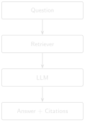
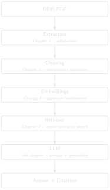

# code/chapter_05/first_rag.py
PROMPT_TEMPLATE = """Answer the question using ONLY the evidence below.
If the evidence doesn't contain the answer, say so — do not guess.
Cite which report each part of your answer comes from.
Evidence:
{evidence}
Question: {question}
Answer:"""5 First RAG System

Progress █████░░░░░░░ 5 / 12 · Estimated time: 60–90 min · Difficulty: 🟠 Intermediate
5.1 Learning objectives
By the end of this chapter, you will be able to:
- Explain retrieval-augmented generation (RAG) as two separate, inspectable steps: retrieve, then generate.
- Assemble retrieved chunks into a prompt that forces a language model to answer only from the evidence it’s given.
- Generate that answer with a real local model (via Ollama) and return it with an explicit evidence list — the source reports and excerpts — rather than an unsupported paragraph.
5.2 Operational Problem
Retrieval (Chapter 4) gets you the right passages. What Mike, the completions engineer, actually wants is an answer: “What led to the fishing operation on report #50?” — not two ranked text chunks he has to read and synthesise himself. But a generated answer that isn’t traceable back to specific reports is worse than no answer at all in an engineering context, because it invites misplaced trust. This chapter builds the smallest system that does both: synthesise an answer, and show exactly where every part of it came from.
5.3 Example DDR extract
NoteTarget interaction, grounded in two real, adjacent reports
Question: What led to the fishing operation on report #50?
Answer: On report #49 (2020-12-07), the crew attempted multiple times
to set packers on BHA #32, but pressure readings showed the ball did
not seat and the packers failed to set. They tripped out with the
packer assembly and picked up a fishing BHA (#33) that same day. On
report #50 (2020-12-08), that fishing run milled up lost pieces of bit.
Evidence:
FORGE-16A-78-32_Drilling_049_2020-12-07.pdf
FORGE-16A-78-32_Drilling_050_2020-12-08.pdfBoth claims here are directly quoted from real report text — nothing in this answer was inferred beyond what the two reports state. This is the target. Keep reading — the practical exercise below checks whether the simple system this chapter builds actually reaches it.
5.4 Theory
RAG (retrieval-augmented generation) (Lewis et al. 2020) is exactly the two chapters you just built, chained together: retrieve relevant evidence (Chapter 4), then hand that evidence to a language model and ask it to answer using only that evidence. The model is not answering from what it memorised during training — it’s answering from the specific passages you retrieved, which is what makes citation possible at all.
TipEngineering Translation: LLM
An LLM (large language model) is like a very well-read new hire: it has absorbed an enormous amount of general drilling and engineering writing, so it writes fluently and knows the vocabulary — but it has never seen your wells or your reports. Left to its own memory, it will guess. RAG is how you make sure it answers from the actual report in front of it, not from a guess dressed up in confident language.
TipEngineering Translation: Prompt
A prompt is the instructions-plus-evidence packet you hand that new hire before asking them to write anything — the equivalent of handing them the specific job’s DDRs and a clear brief, instead of just asking “what usually happens in a fishing job?” and hoping they don’t improvise.
The critical design decision is the prompt: instruct the model explicitly to answer only from the provided context, and to cite which source each part of the answer came from. This doesn’t make hallucination impossible — Chapter 10 covers stronger mitigations — but it is the foundation everything else builds on.
Here’s the complete pipeline you’ve actually built, chapter by chapter — every arrow below is real, working code you’ve already written:

This is deliberately the simplest version of this pipeline that could possibly work — brute-force search, whole-document embeddings, no reranking, no traceability guardrails beyond a citation list. Part II rebuilds nearly every arrow in this diagram to survive a real, full-scale archive.
5.5 Implementation
5.5.1 Step 1: write the instructions the model must follow
What problem are we solving?
Make sure the model answers from the evidence you hand it, not from whatever it remembers from training — and make sure it tells you which report each part of the answer came from.
Inputs
- None yet — this is a fixed template, filled in for each question later.
Expected Output
A reusable prompt template with two blanks: the evidence, and the question.
What just happened?
This is the “brief” you hand the model every single time: answer only from what’s provided, admit it when the evidence doesn’t cover the question, and always say which report backs each claim. Everything else in this chapter exists to fill in {evidence} and {question} correctly.
5.5.2 Step 2: assemble the evidence into that template
What problem are we solving?
Take the reports Chapter 4’s retriever found and package them, labelled by filename, into the prompt template’s {evidence} blank.
Inputs
- A question string.
- The retrieved
(filename, score)pairs from Chapter 4’ssearch. - The full filename and text lists from Chapter 4’s
load_chunks.
Expected Output
One complete prompt string, evidence labelled by source filename, ready to send to a model.
from pathlib import Path
from semantic_search import embed_texts, load_chunks, search # from Chapter 4
def build_prompt(question: str, retrieved: list[tuple[str, float]],
filenames: list[str], texts: list[str]) -> str:
evidence_blocks = []
for filename, _score in retrieved:
text = texts[filenames.index(filename)]
evidence_blocks.append(f"[{filename}]\n{text}")
return PROMPT_TEMPLATE.format(
evidence="\n\n".join(evidence_blocks),
question=question,
)What just happened?
For every report Chapter 4’s retriever returned, this tags its full text with its own filename in square brackets, then stitches all of them together into the {evidence} section of the prompt. Every fact the model can possibly cite is now labelled with exactly which report it came from.
5.5.3 Step 3: retrieve, then generate, then report the sources
What problem are we solving?
Chain retrieval and generation into one function: given a question, find the evidence, ask the model to answer from it, and hand back both the answer and the exact list of reports it was allowed to use.
Inputs
- A question string.
- The embedding model, filenames, texts, and embeddings from Chapter 4.
llm_call: any function that takes a prompt string and returns the model’s answer.
Expected Output
A tuple: the generated answer text, and the list of report filenames that were actually retrieved and shown to the model.
def answer_question(question: str, model, filenames, texts, embeddings,
llm_call) -> tuple[str, list[str]]:
retrieved = search(model, question, filenames, embeddings, top_k=3)
prompt = build_prompt(question, retrieved, filenames, texts)
answer_text = llm_call(prompt) # plug in your LLM of choice
evidence = [filename for filename, _score in retrieved]
return answer_text, evidenceWhat just happened?
This is the whole system end to end: retrieve the top matching reports, build a prompt from them, generate an answer, and return that answer alongside the exact evidence list it was built from — so you (or an engineer reviewing the answer) can always check the citation against the real reports, rather than taking the model’s word for it.
llm_call is intentionally a plain function argument, not a hardcoded API client: plug in a local model, an API-based model, or — while you’re first testing the retrieval and prompt logic — a stub that just echoes the evidence back, so you can verify the pipeline end to end before spending a single API call.
5.5.4 Step 4: plug in a real local model
The stub proved the plumbing. Now generate for real — locally, so no report text ever leaves your machine. Ollama runs a small open model on your own hardware. Install it, pull a model, and start the server:
# install Ollama from https://ollama.com, then:
ollama pull qwen2.5:7b-instruct
ollama serve # leave this running in its own terminalqwen2.5:7b-instruct is a small, capable default, but nothing here is tied to it — pass any model you’ve pulled to ollama_llm_call(model=...). Pick whatever runs comfortably on your hardware: llama3.1:8b or mistral are similar in size, qwen2.5:14b is stronger if you have the memory for it, and swapping the one HTTP call for a hosted API’s would let you point at a cloud model instead. The retrieval and prompt work above doesn’t change either way — only which model reads the evidence.
ollama_llm_call talks to that local server over plain HTTP — standard library only, no extra package to install, and a clear message instead of a crash if Ollama isn’t running:
import json
import urllib.error
import urllib.request
def ollama_llm_call(prompt: str, model: str = "qwen2.5:7b-instruct") -> str:
payload = json.dumps({"model": model, "prompt": prompt, "stream": False}).encode()
request = urllib.request.Request("http://localhost:11434/api/generate", data=payload,
headers={"Content-Type": "application/json"})
try:
with urllib.request.urlopen(request, timeout=120) as response:
return json.loads(response.read())["response"].strip()
except (urllib.error.URLError, OSError) as error:
return f"[Ollama not reachable: {error}. See setup above; retrieval still ran.]"Run the whole system against the single best-matching report:
python code/chapter_05/first_rag.py "What led to the packers failing to set?"
NoteOne real run — qwen2.5:7b-instruct, top_k=1 (your wording will differ)
Question: What led to the packers failing to set?
Answer:
According to the report, pressures indicated that the ball did not seat
and the packers did not set during an attempt to set packers multiple
times.
Reference:
[FORGE-16A-78-32_Drilling_049_2020-12-07.txt] Page 15: "Production
Drilling Other Pressures indicated that ball did not seat and packers
did not set."
Sources:
FORGE-16A-78-32_Drilling_049_2020-12-07.txt
"--- Page 1 --- RPT DATE:12/07/2020 DAILY DRILLING REPORT RPT NUM.:49
... WELL NAME:FORGE 16A [78]-32 ..."That’s a real RAG answer: a plain-English cause, grounded in report #49’s own words, with the source report named and an excerpt you can open and check. Your exact wording will differ — LLM output isn’t deterministic (the Production Reality note below says why) — but the grounded fact, the ball that didn’t seat, comes back every time, because it’s sitting in the evidence the model was handed.
Two honest limits are already visible in that single run:
- Evidence width matters. This ran at
top_k=1— the one closest report. Widen it totop_k=3and the model is handed three full pages of tables at once; in testing it lost the packer line in the noise and answered “the report doesn’t mention it.” That isn’t the model being dim — it’s the whole-document granularity problem from Chapter 4, biting generation now instead of retrieval. Chapter 7’s chunking is what fixes it. - The model can still invent a citation. Notice the answer cites “Page 15.” These reports are a single page — there is no page 15. The fact is grounded; the page number is fabricated. A prompt asking for citations gets citation-shaped text, not guaranteed-correct citations. Chapter 10 wires the real page in from metadata so the model can’t make one up.
5.6 Production Reality
This chapter’s prompt says “answer only from the evidence” — but an instruction in a prompt is a strong nudge, not a guarantee. Real systems have to plan around what happens when that nudge isn’t enough:
- models don’t follow instructions perfectly every time — occasionally one will still answer from general knowledge instead of the evidence, or blend the two without saying so
- the same question, asked twice, can produce two differently worded answers — LLM output isn’t fully deterministic, which matters when someone asks “why did it say something different yesterday?”
- long evidence sections eventually hit the model’s context window limit — a real archive’s retrieved chunks can’t just grow without bound
- every call to a hosted LLM API costs money and takes time; a system answering hundreds of engineering questions a day needs a cost and latency budget, not just a working prompt
None of this means RAG doesn’t work — it means “answer only from evidence” is a design goal you build toward, not a switch you flip. Chapter 10 covers the guardrails that close this gap further.
5.7 Practical exercise
🟢 Beginner
Try it yourself: Wire up answer_question with a stub llm_call that simply returns the evidence text, run it for “What led to the fishing operation on report #50?” with top_k=3, and print the evidence list.
You’ll know it worked when: you can see exactly which three reports came back — and, before reading further, decide for yourself whether that list actually contains what the target answer above needs.
5.8 Field notes
Warning🔧 Field notes: the report the question is about isn’t in the evidence
Query: "What led to the fishing operation on report #50?", top_k=3.
Result: retrieval returns report #49 (rank 1) plus two other reports — but not report #50, the report the question is literally about. The full ranking:
1. 0.4540 Drilling_049_2020-12-07 <- packers fail (correctly retrieved)
2. 0.3639 Drilling_038_2020-11-26
3. 0.3469 Drilling_003_2020-10-22
...
7. 0.3190 Drilling_050_2020-12-08 <- the fishing report itselfWhy: report #50’s own text — bit-mill fishing narrative buried among casing tables, mud tables, and a full BHA component list — is, at whole-document granularity, more similar to several other reports’ tables than it is to a question about fishing. This is the same granularity problem Chapter 4 already flagged; here it has a sharper consequence.
Lesson: this is exactly the failure mode this chapter’s own Key Takeaways warn about — and it’s a dangerous one specifically because the question names “report #50” directly. A careless llm_call implementation could echo that report number back in its answer without ever having actually retrieved report #50’s content, producing a citation-shaped sentence that looks grounded and isn’t. Always check what’s actually in the evidence list — not what the question happens to mention — before trusting an answer. Chapter 7’s chunking and Chapter 9’s hybrid retrieval are what actually close this gap; Part I’s simple system doesn’t, and pretending otherwise would defeat the entire point of this book.
5.9 Challenge exercise
🔴 Advanced
Challenge: Connect a real LLM (local via transformers/ollama, or a hosted API) as llm_call, and add a check that rejects the answer if it mentions a report filename that wasn’t in the retrieved evidence list — a first, crude hallucination guard. Then ask it a question the ten-report sample archive genuinely can’t answer (e.g. “what happened on report #100?”) and confirm it says so rather than inventing an answer. A reference solution is in code/chapter_05/challenge/.
5.10 Key takeaways
- RAG is retrieval, then generation — two separate, individually debuggable steps, not one opaque black box.
- If retrieval is wrong, generation cannot save you — always verify the evidence list before trusting the generated answer.
- A prompt that instructs “answer only from evidence, cite sources” is necessary but not sufficient for trustworthy answers. Part II builds the guardrails that make it sufficient.
5.11 Repository files
| File | Purpose |
|---|---|
code/chapter_05/first_rag.py |
Prompt assembly and evidence-tracked question answering |
notebooks/chapter_05_explore.ipynb |
Interactive companion notebook |
CautionCHECKPOINT — Chapter 5
Tip✓ WHAT YOU BUILT
first_rag.py — an Industrial RAG system: ask it a question in plain English, and it retrieves evidence, generates an answer with a local model, and hands back the source reports and excerpts that answer is traceable to. This is Part I’s capstone artifact.
NoteTry it in the browser: the companion app
The optional DDR RAG Companion App (book/app/) wraps this same retrieve-then-generate-then-cite flow in a small Streamlit screen. Run streamlit run book/app/streamlit_app.py, pick a question, and see the evidence cards, the local-model answer, and a “Why this answer?” panel side by side. It reuses this chapter’s code (plus Chapter 9’s hybrid retrieval) — nothing new to learn, just the payoff on one screen.
5.12 What can you do now that you couldn’t do before?
You can ask an engineering question in plain English and get back a generated answer with an explicit, checkable list of exactly which reports it came from — not just ranked passages you’d still have to read and synthesise yourself.
5.13 Suggested next step
Coming up in Chapter 6: What you’ve built in Part I works — on ten clean, digital, hand-picked reports out of the full 76-report Utah FORGE archive. Part II industrialises this system against the reality of a full archive: retrieval that has to be both fast and precise across every report, and answers that have to survive scrutiny from someone who wasn’t in the room when they were generated. Chapter 6 starts with the first thing that breaks in a typical real-world archive: scanned reports with no extractable text at all.